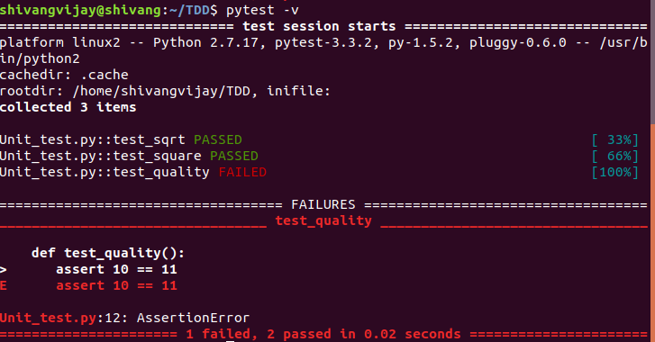

Test Driven Development (TDD) in Python
Introduction
TDD is a software development approach in which test cases are developed to specify and validate what the code will do. In simple terms, test cases for each functionality are created and tested first and if the test fails then the new code is written in order to pass the test and make code simple and bug-free.
Test-Driven Development starts with designing and developing tests for every small functionality of an application. TDD framework instructs developers to write new code only if an automated test has failed. This avoids duplication of code.
Test-Driven development is a process of developing and running automated tests before actual development of the application. Hence, TDD is sometimes also called Test First Development.
How to perform TDD Test

Following steps define how to perform TDD test,
-
Add a test.
-
Run all tests and see if any new test fails.
-
Write some code.
-
Run tests and Refactor code.
-
Repeat.
Acceptance TDD (ATDD)
With ATDD you write a single acceptance test. This test fulfils the requirement of the specification or satisfies the behaviour of the system. After that write just enough production/functionality code to fulfil that acceptance test. Acceptance test focuses on the overall behaviour of the system.

Advantages of TDD
Following are the main advantages of Test Driven Development in Software Engineering:
-
Early bug notification.
-
Developers test their code but in the database world, this often consists of manual tests or one-off scripts. Using TDD you build up, over time, a suite of automated tests that you and any other developer can rerun at will.
-
Better Designed, cleaner and more extensible code.
-
It helps to understand how the code will be used and how it interacts with other modules.
-
It results in better design decisions and more maintainable code.
-
TDD allows writing smaller code having single responsibility rather than monolithic procedures with multiple responsibilities. This makes the code simpler to understand.
-
TDD also forces you to write only production code to pass tests based on user requirements.
-
Confidence to Refactor
-
If you refactor code, there can be possibilities of breaks in the code. So having a set of automated tests you can fix those breaks before release. Proper warning will be given if breaks are found when automated tests are used.
-
Using TDD, should result in faster, more extensible code with fewer bugs that can be updated with minimal risks.
-
Good for teamwork
-
In the absence of any team member, other team members can easily pick up and work on the code. It also aids knowledge sharing, thereby making the team more effective overall.
-
Good for Developers
-
Though developers have to spend more time in writing TDD test cases, it takes a lot less time for debugging and developing new features. You will write cleaner, less complicated code.
Which is better – pytest or unittest?
Although both the frameworks are great for performing testing in python, pytest is easier to work with. The code in pytest is simple, compact, and efficient.
For unittest, we will have to import modules, create a class and define the testing functions within that class. But for pytest, we only have to define the testing function. Pytest is also fast and efficient.
Pytest FrameWork
The advantages of Pytest are as follows −
-
Pytest can run multiple tests in parallel, which reduces the execution time of the test suite.
-
Pytest has its own way to detect the test file and test functions automatically, if not mentioned explicitly.
-
Pytest allows us to skip a subset of the tests during execution.
-
Pytest allows us to run a subset of the entire test suite.
-
Pytest is free and open source.
-
Because of its simple syntax, pytest is very easy to start with.
Pytest - Environment Setup
To install the latest version of pytest, execute the following command
|
$ pip install pytest |
Identifying Test files and Test Functions
Running pytest without mentioning a filename will run all files of format test_*.py or *_test.py in the current directory and subdirectories. Pytest automatically identifies those files as test files. We can make pytest run other filenames by explicitly mentioning them.
Pytest requires the test function names to start with “test”. Function names which are not of format test* are not considered as test functions by pytest. We cannot explicitly make pytest consider any function not starting with test as a test function.

-v increases the verbosity.

Note − pytest command will execute all the files of format test_* or *_test in the current directory and subdirectories.
To execute the tests from a specific file, use the following syntax −
|
$ pytest <filename> -v |
Pytest - Fixtures
Fixtures are functions, which will run before each test function to which it is applied. Fixtures are used to feed some data to the tests such as database connections, URLs to test and some sort of input data. Therefore, instead of running the same code for every test, we can attach a fixture function to the tests and it will run and return the data to the test before executing each test.
A function is marked as a fixture by −
|
@pytest.fixture |


More Important Features of pytest
The syntax to stop the execution of test suite soon after n number of test fails is as follows
|
$ pytest --maxfail = <num> |

We will now execute the tests from test_multiplcation.py and generate the xml by running.
|
$ pytest test_max_failure.py -v --junitxml="result.xml" |
Learn More About TDD
-
https://www.tutorialspoint.com/pytest/pytest_substring_matching_of_test_names.htm
-
https://docs.pytest.org/en/latest/example/markers.html#mark-examples
-
https://docs.pytest.org/en/7.1.x/getting-started.html#continue-reading
-
https://www.xenonstack.com/blog/test-driven-development-python